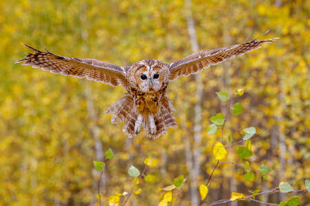
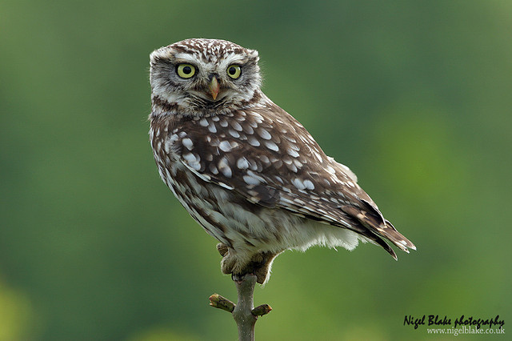
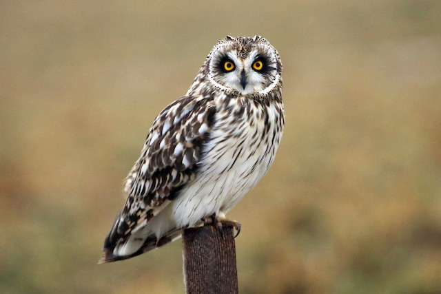
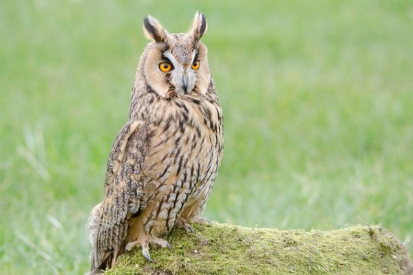

If you hear a classic "twit-twoo" in a British woodland, you are listening to a tawny owl. Interestingly, this famous sound is actually a duet: the female typically gives the sharp "ke-wick" call, and the male responds with the hooting "hoo-hoo-oooo." These are the UK’s most common owls, strictly nocturnal and highly territorial, rarely moving more than a few kilometers from where they were born. Their mottled brown feathers provide perfect camouflage against the bark of the broad-leaved trees they call home
| Wingspan | Lifespan | Weight | Number of Breeding Pairs |
|---|---|---|---|
| 94-104cm | 4-6 years | 330-800 grams | 50,000 |
The tawny owl hunts mice, voles and other small mammals, but also can eat bats, frogs and small birds. They like woodland unlike the other owls, so Chapel Wood is a great nature reserve for them.

The barn owl is arguably the most iconic of British raptors, easily identified by its ghostly white underparts and distinctive heart-shaped facial disk. This facial structure isn't just for show; it acts like a satellite dish, funneling the slightest rustle of a vole toward the owl's exceptionally sensitive ears. Unlike many other owls, the barn owl lacks the typical "hoot," instead emitting a series of eerie, piercing shrieks and hisses that earned it the nickname "the screech owl."
| Wingspan | Lifespan | Weight | Number of breeding pairs |
|---|---|---|---|
| 54-58cm | 3-4 years | 140-220 grams | 5,700-7,000 |
Little owls live in open, lowland areas with mixed habitats like farmland, parkland, orchards, and large gardens which is why Elmley National nature reserve is probably the best reserve for them.

The short-eared owl is a bird of open spaces, favoring moorlands, saltmarshes, and coastal grasslands. It is one of the easiest owls to see because it frequently hunts during the day, quartering low over the ground with a rhythmic, moth-like flight. They are famous for their striking yellow eyes set within dark "mascara" patches and their tendency to nest on the ground amidst tall grass. During winter, their numbers swell as migrants fly across the North Sea from Scandinavia to escape the freezing Arctic winters.
| Wingspan | Lifespan | Weight | Number of breeding pairs |
|---|---|---|---|
| 85-110cm | 4-12 years | 200-475 grams | 620-2,180 |
The Short eared owl genarally hunts voles, like most of the other owls, so an open treeless landscape is the best. Again, Elmley National nature reserve is best.

The short-eared owl is a bird of open spaces, favoring moorlands, saltmarshes, and coastal grasslands. It is one of the easiest owls to see because it frequently hunts during the day, quartering low over the ground with a rhythmic, moth-like flight. They are famous for their striking yellow eyes set within dark "mascara" patches and their tendency to nest on the ground amidst tall grass. During winter, their numbers swell as migrants fly across the North Sea from Scandinavia to escape the freezing Arctic winters.
| Wingspan | Lifespan | Weight | Number of breeding pairs |
|---|---|---|---|
| 80-100cm | 4 years | 200-400 grams | 1,800-6,000 |
The Long eared owl needs dense cover for nesting and roosting, so they can be found in woodlands in large numbers, so Thertford forest is the best place, althought they can be seen in Elmley National nature reserve in the winter.